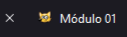
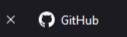

Para criarmos um parágrafo em HTML5 usamos as tags <p> e </p>.
Todo o conteúdo do parágrafo deve ser escrito dentro dessas duas tags.
Minhas linguagens de programação prefridas são python e JavaScript.
Código:
<p>
Minhas linguagens de programação prefridas são python e JavaScript.
</p>
Podemos também adicionar emojis às nossas páginas, onde cada emoji possui um código único. Confira alguns exemplos abaixo.
😋 😃 😄 😁 😉
Recomendo que você visite o site emojipedia.org lá você terá acesso a todos os códigos dos emojis, basta trocar os parâmetros U+ por &#x seguido do código.
Código:
<p>
😋 - 😃 - 😄 - 😁 - 😉
<p>
As quebras de linha são representadas únicamente pela tag <br>
essas tags não possuem tag de fechamento, servem para delimitar até onde o texto
será exibido quebrando-o e colocando o conteúdo em outra linha.
Maria gosta muito de desenvolver jogos na UNITE.
Maria gosta muito de desenvolver
jogos na UNITE.
Código:
<p>
Maria gosta muito de desenvolver jogos na UNITE. <br>
Maria gosta muito de desenvolver <br> jogos na UNITE.
</p>
Inicialmente vamos falar de direitos autorais, esse assunto é de suma importância para você não ter problemas com os seus projetos no futuro. Sabe aquela imagem que você achou no google e que se encaixou perfeitamente no seu site? é muito provável que você não possa usá-la e pode até mesmo ser processado(a) por isso. Para entender melhor sobre esse asssunto de direitos de imagem, recomendo que você assista a essa entrevista de um especialista em direito digital Alan Moreira Lopes.
assista ao video: https://youtube.com/Blirurp2fg
Para adicionar uma imagem no seu site Inicialmente você deve criar uma pasta chamada imagens dentro da pasta do seu projeto, depois coloque dentro dessa pasta todas as imagens que você vai utilizar. use a tag única <img> para criar o código. Você deve usar a tag img seguida dos atributos src e alt como eu exemplifiquei no código abaixo.
Código:
<img src="imagens/farol.jpg" alt="Farol">
Com certeza você já viu aqueles pequenos ícones que aparecem ao lado dos sites que visitamos, na parte superior do seu navegador. Para adicioná-los ao seu site você deve usar a tag <link rel="shortcut icon" href="favicon" type="image/x-icon"> dentro das tags head logo abaixo das tags tittle.
 Código:
<head>
<meta charset="UTF-8">
<meta name="viewport" content="width=device-width, initial-scale=1.0">
<title>Módulo 01</title>
<link rel="shortcut icon" href="imagens/faviconcat.png" type="image/x-icon">
</head>
Se você pretende deixar em negrito alguma palavra, frase ou Parágrafo em HTML, você pode usar as tags <strong></strong> e colocar o conteúdo entre uma tag e outra, como exemplifiquei abaixo.
Mariana estuda engenharia de software na UFC
Código:
<p>
Mariana estuda <strong>engenharia de software</strong>
na <strong>UFC</strong>
</p>
Se você quiser deixar uma palavra, frase ou parágrafo em itálico você deve usar as tags <em></em> e colocar o conteúdo entre essas duas tags, veja o exemplo abaixo:
Aprender java não é impossível, só não é possível 👀
Código:
<p>
Aprender java não é <em>impossível</em>,
só não é <em>possível</em> 👀
</p>
Para fazer essas marcações de texto em HTML5 você pode usar as tags <mark>...</mark> colocando o conteúdo dentro de cada uma delas.
O professor gustavo guanabara fez mais pela tecnologia
nesse país do que qualquer outra instituição de ensino.
Código:
<p>
O professor <mark>gustavo guanabara</mark>
fez mais pela <mark>tecnologia</mark>
nesse país do que qualquer outrinstituição de ensino.
</p>
Para criar uma citação em HTML usamos as tags <q> e </q> ou <blockquote> e </blockquote> dentro de um parágrafo, logo a citação ja receberá as aspas como no exemplo abaixo.
Segundo o filósofo Aristóteles A dúvida é o princípio da sabedoria.
Código:
<p>
Segundo o filósofo Aristóteles <q>A dúvida é o princípio da sabedoria.</q>
</p>
Sempre que você quiser escrever uma sigla, mas deixar claro para o usuário e aos mecanismos de busca, você pode usar as tags <abbr> e </abbr> confira o exemplo abaixo.
Segundo o IBGE a população brasileira é de 225 Milhões de pessoas.
Código:
<p>
Segundo o <abbr title="Instituto Brasileiro de Geografia e Estatísca">IBGE</abbr>
a população brasileira é de 225 Milhões de pessoas.
</p>
Existem diversos tipos de listas em HTML sendo listas ordenadas, não ordenadas e mistas. Eu desenvolvi uma página com vários exemplos de listas ordenadas e não ordenadas confira: https://jeovadev.github.io/ListasHTML/
Podemos também criar listas dentro de outras listas denominadas listas mistas, veja o exemplo a seguir:
Código:
<ol>
<li>Camarão</li>
<ul type="disc">
<li>Muqueca de camarão</li>
<li>camarão empanado</li>
</ul>
<li>Frango</li>
<ul type="disc">
<li>Frango empanado</li>
<li>Frango a parmegiana</li>
</ul>
</ol>
Para criar um hyperlink, devemos criar Âncoras através da tag <a>. O principal atributo dessa tag é o href, que cria uma refêrencia hipertexto. veja esse exemplo simples:
<h1>Siga meu perfil no github</h1>
<a href="https://github.com/jeovadev">https://github.com/jeovadev</a>
Para criar um link interno você deve usar a tag <a> e no atributo href você deve colocar o nome do arquivo que você quer abrir quando essa ação for execultada. em seguida, use o atributo target"_self" para sinalizar para o navegador que isso se trata de um link interno. Confira o exemplo abaixo:
expage.htmlCódigo:
<a href="expage.html" target="_self">expage.html</a>
Para criar links externos você deve usar a tag <a> e colocar a URL do site que você quer disponibillizar dentro do atributo href. É recomendado que assim como nos links internos você use o atributo taget"..." e dentro das aspas você coloque _blank para sinalizar ao navegador que se trata de um link de terceiros e que seja aberto em outra aba. Confira o exemplo abaixo:
https://github.comCódigo:
<a href="https://github.com" target="_blank" rel"external">https://github.com</a>
Para disponibillizar um arquivo para download dentro do seu site você deve usar a tag <a> e colocar o nome do arquivo no atributo href e complementar com mais dois atributos download".." e o type"..". confira o exemplo abaixo:
Código:
<a href="imagens/cat.png" download="cat.png" type="image/png">DOWNLOAD</a>
Imagens que se adequam a todos os tipos de tela. Geralmente usamos as medidas padrão de 300x300, 700x700 e 1000x1000 (px). Para isso ultilizamos as tags <img> e <picture> e os atributos <source media="(max-width: )" srcset="" type="image/"> confira o exemplo abaixo:
Código:
<picture>
<source media="(max-width:750px )" srcset="imagens/paisagem300.jpg" type="image/jpeg">
<source media="(max-width:1050px )" srcset="imagens/paisagem700.jpg" type="image/jpeg">
<img src="imagens/paisagem1000.jpg" alt="Paisagem1">
</picture>
Para adicionar um áudio dentro do seu site você deve usar a tag <audio> seguido dos parâmetros preload, controls, loop, source e type. Confira o exemplo abaixo:
Código:
<audio preload="metadata" controls loop>
<source src="midia/sunny-day.mp3.mp3" type="audio/mp3">
</audio>
Para adcionar vídeos externos ao seu site basta ir no vídeo e copiar o código do video para fazer a incorporação, confira o exemplo abaixo:
Código:
Código:
body { font-family: 'Segoe UI', Tahoma, Geneva, Verdana;
text-align: justify; }
a { text-decoration: none;
color: rgb(0, 20, 196); }
code { color: rgba(16, 76, 189, 0.87); }